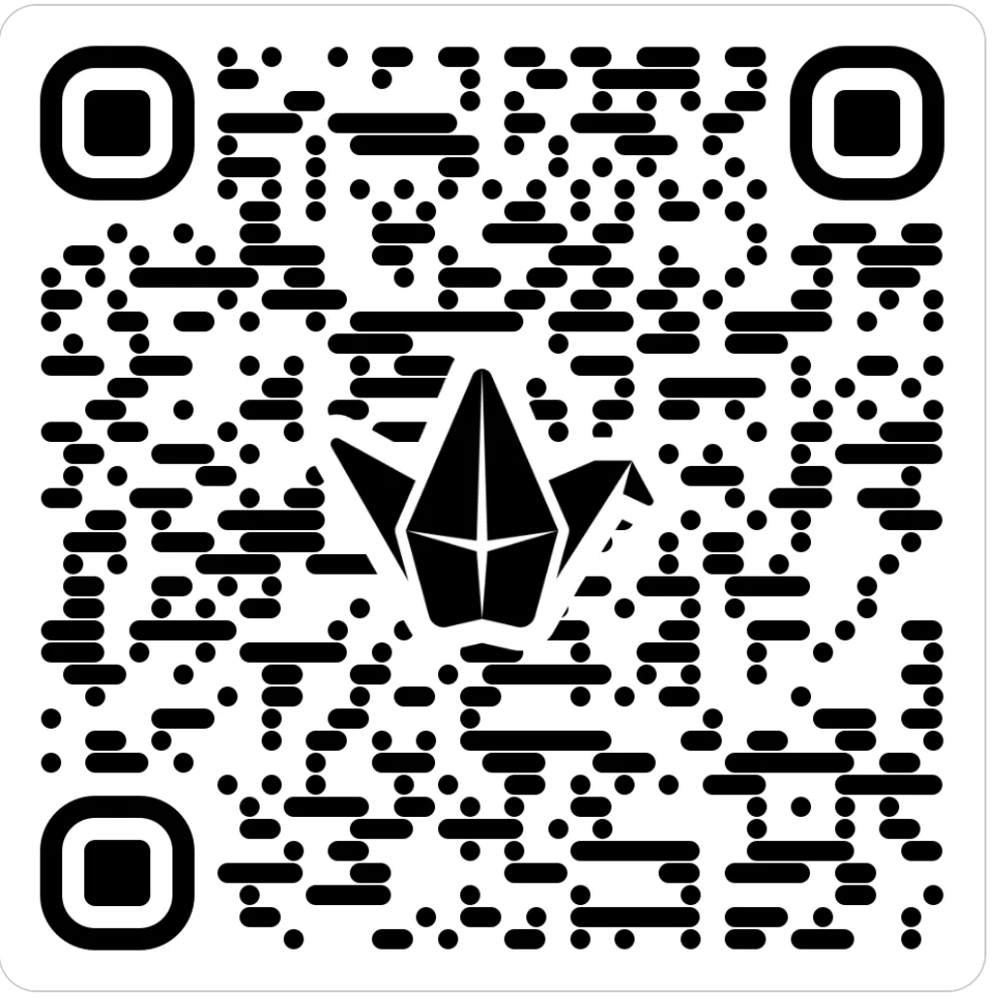

Retos individuales
Reto 1: aprendemos con Chat GPT y Google Trends
Objetivo: Aprender a formular preguntas efectivas a ChatGPT para maximizar la generación de ideas y la investigación de mercado en el desarrollo de proyectos innovadores.
1. Entender a ChatGPT:
Qué es ChatGPT: ChatGPT es un modelo de lenguaje desarrollado por OpenAI que puede generar texto, responder preguntas, y asistir en diversas tareas basado en las instrucciones que recibe.
Capacidades y Limitaciones: Reconoce que, aunque es una herramienta poderosa, ChatGPT puede no entender preguntas ambiguas o demasiado complejas y no tiene acceso a datos en tiempo real más allá de su último entrenamiento (2023).
2. Formulación de Preguntas:
Claridad y Especificidad: Formula preguntas claras y específicas. Por ejemplo, en lugar de "dame ideas de negocio", pregunta "¿Cuáles son ideas de negocio innovadoras relacionadas con la tecnología verde para zonas urbanas?"
Desglose de Preguntas: Si tienes una idea compleja, desglosa la pregunta en partes más pequeñas para explorar diferentes aspectos de la idea.
3. Uso en el Brainstorming:
Expansión de Ideas: Usa ChatGPT para expandir una lista de ideas iniciales. Pregunta cómo se podrían adaptar esas ideas a diferentes mercados o cuáles serían las aplicaciones tecnológicas relevantes.
Comparación y Contraste: Pide a ChatGPT que compare dos o más ideas de negocio, señalando ventajas y desventajas de cada una.
4. Investigación y Validación con ChatGPT:
Investigación de Competencia: Pregunta sobre empresas existentes en el mercado que realicen actividades similares a tu idea.
Sugerencias de Mejora: Solicita sugerencias sobre cómo podrías mejorar una idea o hacerla más atractiva para el mercado actual.
5. Interacción Continua:
Diálogo Abierto: Mantén un diálogo abierto con ChatGPT, realizando preguntas de seguimiento basadas en las respuestas que te da.
Refinamiento de Respuestas: Si una respuesta de ChatGPT no es clara o completa, pide más detalles o ejemplos específicos.
6. Práctica :
Análisis de Respuestas: Aprende a discernir y evaluar la utilidad de las respuestas de ChatGPT para diferentes tipos de preguntas.
Reto 2 : Diseño de Infografía sobre IA y Emprendimiento
Objetivo de la Actividad: Fomentar la comprensión y la reflexión sobre la inteligencia artificial y su aplicación en el emprendimiento a través de la creación de una infografía educativa que resuma los conceptos clave, beneficios, desafíos y consejos prácticos para su implementación en pequeñas y medianas empresas (PYMEs).
Descripción de la Actividad: Cada estudiante creará una infografía que ilustre de manera clara y concisa cómo la inteligencia artificial puede ser aplicada en el ámbito del emprendimiento, basándose en su aprendizaje teórico y práctico. Esta infografía deberá incluir ejemplos específicos, tips para la implementación y reflexiones personales sobre el uso de la IA.
Pasos de la Actividad:
Investigación:
Investigar sobre los fundamentos de la inteligencia artificial y su relevancia para los emprendedores.
Identificar casos de éxito y estudios de caso donde la IA ha sido beneficioso para las PYMEs.
Diseño del Contenido:
Seleccionar los puntos clave que se quieren destacar:Definición de IA: Explicar qué es la inteligencia artificial de manera simple.
Aplicaciones en Emprendimiento: Describir cómo la IA puede optimizar procesos, mejorar la toma de decisiones y aumentar la eficiencia.
Beneficios de la IA: Enumerar los beneficios tangibles como la reducción de costos, la mejora del servicio al cliente, etc.
Desafíos y Consideraciones: Abordar los posibles desafíos y cómo superarlos.
Tips y Mejores Prácticas: Ofrecer consejos para integrar la IA en los negocios pequeños y medianos.
Reflexión Personal: Incluir una sección donde el estudiante refleje sobre cómo la IA podría impactar su propio emprendimiento o área de interés.
Creación de la Infografía:
Utilizar herramientas digitales como Canva, Adobe Spark o Piktochart para diseñar la infografía.
Integrar gráficos, imágenes y diagramas que hagan la información más accesible y atractiva.
Presentación y Discusión:
Presentar la infografía en clase o subirla a la plataforma del curso para compartir con compañeros.
Discutir cómo cada uno ha interpretado la aplicación de la IA en el emprendimiento y aprender de las diferentes perspectivas.
Evaluación:
La infografía será evaluada según la claridad, creatividad, profundidad del contenido, y precisión en la representación de la información sobre IA.
Se valorará también la originalidad en la presentación y la capacidad de sintetizar y comunicar ideas complejas de manera efectiva.
.
Padlet de clase
Aquí teneis el código acceso al padlet:

..
Obra publicada con Licencia Creative Commons Reconocimiento Compartir igual 4.0